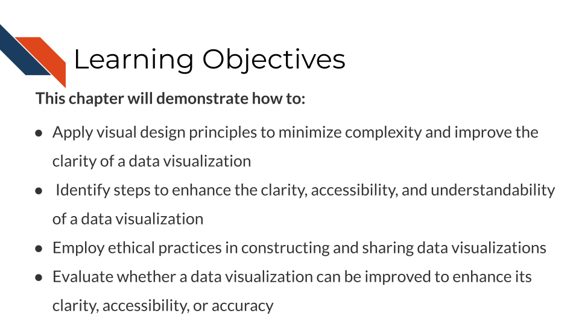

Chapter 4 High quality and accessible data visualizations
Creating a high quality data visualization requires more than picking the right plot for your data and your research question. Certainly following visual design principles and utilizing design tools is a part of creating high quality visualization. However, further best practices are needed to ethically present complex data with clarity in a way that is accessible to audiences. This chapter will discuss ways to enhance the clarity and accessibility of data visualizations as well as important ethical considerations.
4.1 Learning Objectives

## Presenting complex data with clarityAn overly complex plot can be misleading for a number of reasons. These reasons include obscuring something because the plot focuses the viewer’s attention on another aspect, not separating high density areas or overlapping plot elements, including too much information, or not specifying specialized language such as acronyms or field specific/technical vocabulary.
General tips to reduce complexity when you can:
- Use your visualization to answer only one question at a time
- Add annotations or labels (lines, names, colors, etc.)
- Minimize white space, but don’t over clutter
- Use clear and accurate labeling and axis names
- Readable (large text)
- Understandable (e..g, avoid jargon and define uncommon acronyms)
- Separate plot elements or overlapping data
- Use facets or subplots to separate different categories of data
- Increase opacity/transparency
- Decrease point size or change the shape
- Consider a log transformation
- Use a zoomed inset
- Consider typical reading order
- top to bottom
- left to right
Reducing complexity enhances clarity and accessibility by helping the viewer know where to focus and providing them with reference points or information they need to know (such as acronym meanings).
4.2 Best practices for accessible visualizations
Reducing complexity is a very important first step in designing accessible visualizations. Beyond reducing complexity, additional considerations are necessary to further enhance accessibility for visualization audiences. Audiences may have visual impairments such as low vision or blindness or color vision deficiency, motor impairments (relevant for interactive visualizations), or dyslexia. Additionally, audiences likely will be unfamiliar with your research and may be distracted when interacting with your research.
This course will mostly focus on making visualizations accessible for those with visual impairments and those unfamiliar with your research.
4.3 Ethical data visualization
Ethical visualizations improve viewers’ understanding rather than confuse or mislead. Misleading messages are not always intentional on the part of the researcher putting together a data visualization, and mistakes happen (e.g., bugs in software, errors in data entry, etc.). It’s the responsibility of the researcher to carefully evaluate all data visualizations before sharing them to make sure that the visualizations clearly and accurately present the data and communicate the overall goal.
Several of the topics we’ll provide within this section about ethical considerations are related to tips to reduce complexity and enhance accessibility. This is not surprising given that clear communication is a necessity for both ethical and accessible visualizations.
4.3.1 Data inclusion safety and transparency
The rules within this section are aimed to safeguard patient privacy and provide transparency.
Rule 1: Don’t include identifiable data
ADD thoughts here
Rule 2: Include all relevant data or subgroups
ADD thoughts here
Rule 3: Describe removed samples or dropouts
ADD thoughts here
4.3.2 Accuracy checks
The rules within this section are aimed to encourage careful verification of visualizations.
Rule 1: Verify that visualizations accurately represent the data
ADD thoughts about data that may be missing, or sizes/area that don’t align with data. Repeat the idea of checking twice before sharing the visualization
Rule 2: Use clear and accurate axis labels
ADD thoughts especially related to axis labels. Often having simplified axis labels help audiences. Doing this ethically such that the simplified label is what is being plotted is really important. If the label doesn’t match the data, why not plot the data for the simplified label?
4.3.3 Avoiding data distortion
The aims for rules within this section include to avoid misleading messages and to compare groups fairly.
Rule 1: Use fair axis limits rather than truncating axes
ADD about starting axis limits at 0 because otherwise differences will look starker than they are
ADD about axis limits when you have facets and how audiences may expect those subplots to use the same axis limits
Rule 2: Order axes in a logical way that corresponds to the plot’s message
ADD info about the overall message. If a line is going up over time, but the message is related to decrease, why is the line going up? This can be misleading.
Rule 3: Separate plot elements
ADD info about how true info can be obscured if plot elements aren’t separated.
4.3.4 Plagiarism and inspiration
ADD info about plagiarism and what that means for data visualization
ADD info about inspiration
Rule 1: If in doubt, attribute
ADD info about attribution if you’re concerned.
4.3.5 Empathy
Tips for showing empathy while constructing data visualizations based on suggestions from the Urban Institute. These are more tips and not rules because they are more subjective.
Visualize each data point
Avoid stereotypical colors
Use person-first language when appropriate and avoid insensitive language
Expand an “Other” category